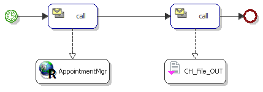
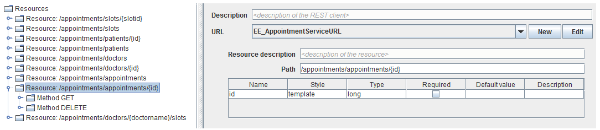
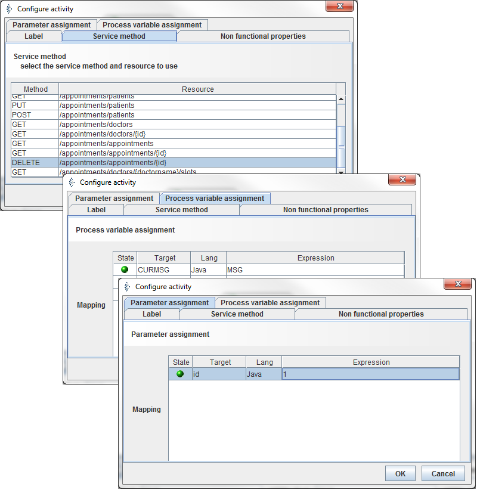
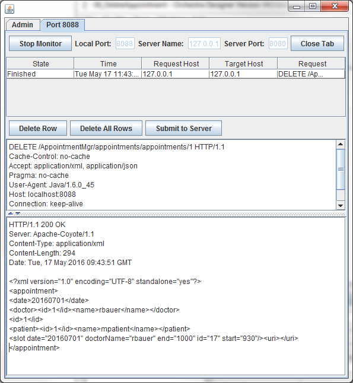
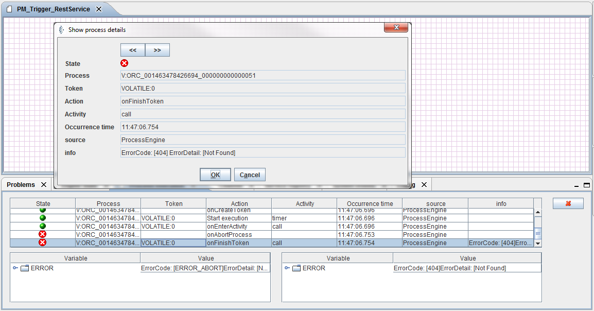

Delete an appointment (Method DELETE)

Topic content
In this chapter we will create a Orchestra REST Client implementation to delete a particular appointment and save it to your File system. According to chapter 3.3.8 Delete an appointment by using a Template Parameter (Method DELETE) we request the appointmentService by using the URL
http://localhost:8080/AppointmentMgr/appointments/appointments/{id}
1.Copy your shell scenario from chapter 4.5.1 Preparation.
2.Open your process model.
3.Add the Rest Service Client and a call activity to your process model.
4.Link all elements in your modell.

Figure 19 – Delete an appointment – Process Modell
5.Now you can configure your call activity for the AppointmentMgr-Service.
As an additional information for telling the server, which appointment slot we want to get, we have to enhance the URL with the Template Paramter id of our Request.

Figure 20 – Delete an appointment – REST -Service Method Configuration
6.Open the register Service method and select the DELETE-Method for /appointments/appointments/{id}.
7.Assign the Response MSG of the call to the CURMSG of the process modell.
8.Assign the id-Template Parameter “1”.

Figure 21 – Delete a particular appointment by using a Template Parameter – Call configuration
9.Start your Test-Engine, and have a look at your result-File.

Figure 22 – TCPMON Trace: Delete an appointment
Request |
Response |
DELETE /AppointmentMgr/appointments/appointments/1 HTTP/1.1 Cache-Control: no-cache Accept: application/xml, application/json Pragma: no-cache User-Agent: Java/1.6.0_45 Host: localhost:8088 Connection: keep-alive
|
HTTP/1.1 200 OK Server: Apache-Coyote/1.1 Content-Type: application/xml Content-Length: 294 Date: Tue, 17 May 2016 09:43:51 GMT
<?xml version="1.0" encoding="UTF-8" standalone="yes"?> <appointment> <date>20160701</date> <doctor><id>1</id><name>rbauer</name></doctor> <id>1</id> <patient><id>1</id><name>mpatient</name></patient> <slot date="20160701" doctorName="rbauer" end="1000" id="17" start="930"/><URL></URL> </appointment> |
If we have a look in the servers Respons we get the HTTP Code 200 OK. So everything is fine an the patients new name is commited by the server.
As addional test we can resent the request to the server. Now we compare the two responses. The server responses with HTTP Code 404 Not Found, because this ID is no longer available.
Request |
Response |
DELETE /AppointmentMgr/appointments/appointments/1 HTTP/1.1 Cache-Control: no-cache Accept: application/xml, application/json Pragma: no-cache User-Agent: Java/1.6.0_45 Host: localhost:8088 Connection: keep-alive |
HTTP/1.1 404 Not Found Server: Apache-Coyote/1.1 Content-Type: application/xml Content-Length: 42 Date: Fri, 06 May 2016 09:48:43 GMT
<error>Appointment with id 1 could not be deleted</error> |

Figure 23 – Orchestra Error: Delete an non existing appointment